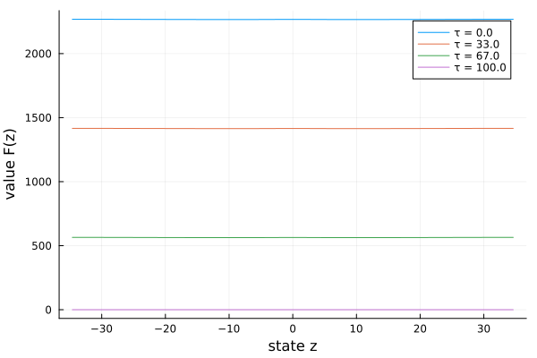

Tuckman–Vila (1992): a finite-horizon problem
So far every model has been stationary. Tuckman–Vila is time-dependent: an arbitrageur faces holding costs over a finite horizon $[0, T]$, so the value function $F(z, \tau)$ depends on calendar time. pdesolve handles this by taking a time grid τs as a fourth argument and solving backward from a terminal condition. The PDE function then takes a third argument τ:
\[\partial_\tau F + \max_i\Bigl\{ (\mu + \sigma^2 F_z)\, a i - \tfrac12 \sigma^2 (a i)^2 \Bigr\} - \rho z F_z + \tfrac12 \sigma^2 (F_{zz} - F_z^2) = 0.\]
The model
using EconPDEs, Distributions, Plots
Base.@kwdef struct TuckmanVilaModel
c::Float64 = 0.06
r::Float64 = 0.09
ρ::Float64 = 5.42
σ::Float64 = 26.72
a::Float64 = 26.72
T::Float64 = 100
end
function initialize_stategrid(m::TuckmanVilaModel; zn = 200)
d = Normal(0, sqrt(m.σ^2 / (2 * m.ρ)))
(; z = range(quantile(d, 0.00001), quantile(d, 0.99999), length = zn))
end
function initialize_y(m::TuckmanVilaModel, stategrid)
zn = length(stategrid[:z])
(; F = zeros(zn))
end
function (m::TuckmanVilaModel)(state::NamedTuple, u::NamedTuple, τ::Number)
(; c, r, ρ, σ, a, T) = m
(; z) = state
(; F, Fz_up, Fz_down, Fzz) = u
Fz = (z >= 0) ? Fz_up : Fz_down
ϕ = z * (1 + z^2)^(-1 / 2)
ϕz = (1 + z^2)^(-3 / 2)
ϕzz = -3 * z * (1 + z^2)^(-5 / 2)
sτ = c / r * (1 - exp(-r * (T - τ)))
μL = ρ * z - 0.5 * σ^2 * ϕzz / ϕz + c / sτ * (ϕ - 1) / ϕz
iL = 1 / a * (μL / σ^2 + Fz)
μS = ρ * z - 0.5 * σ^2 * ϕzz / ϕz + c / sτ * (ϕ + 1) / ϕz
iS = 1 / a * (μS / σ^2 + Fz)
μ, i = 0.0, 0.0
if iL > 0
i, μ = iL, μL
elseif iS < 0
i, μ = iS, μS
end
Ft = -((μ + σ^2 * Fz) * a * i - 0.5 * σ^2 * (a * i)^2 - ρ * z * Fz + 0.5 * σ^2 * (Fzz - Fz^2))
return (; Ft)
endSolving it
yend is the terminal value at τs[end]; pdesolve marches backward over τs.
m = TuckmanVilaModel()
stategrid = initialize_stategrid(m)
yend = initialize_y(m, stategrid)
τs = range(0, m.T, length = 10)
result = pdesolve(m, stategrid, yend, τs)Residual_norm: [0.0, 1.6461193352876568e-10, 1.1346898445751498e-10, 7.25737651712573e-11, 2.0849096270273682e-10, 9.802897411632442e-11, 4.1078811213568716e-11, 3.558807091811131e-11, 3.532761045112264e-11, 0.0]
Zero: [OrderedDict(:F => [2268.1262862745757, 2268.123774542817, 2268.1188381707507, 2268.111563354787, 2268.1020354024913, 2268.0903387388885, 2268.0765569128826, 2268.060772603803, 2268.0430676280903, 2268.023522946119 … 2268.0235229227046, 2268.0430676046735, 2268.0607725803848, 2268.0765568894626, 2268.090338715468, 2268.1020353790705, 2268.111563331366, 2268.118838147329, 2268.123774519394, 2268.126286251152]), OrderedDict(:F => [1984.1946628323408, 1984.1921511107876, 1984.1872147600197, 1984.1799399772597, 1984.17041207082, 1984.1587154664035, 1984.1449337135305, 1984.1291494920818, 1984.1114446189863, 1984.0919000550496 … 1984.0919000397487, 1984.111444603685, 1984.1291494767802, 1984.144933698229, 1984.1587154511026, 1984.1704120555196, 1984.1799399619604, 1984.1872147447207, 1984.1921510954896, 1984.1946628170422]), OrderedDict(:F => [1700.265741902437, 1700.2632302086897, 1700.258293915946, 1700.2510192236507, 1700.241491442148, 1700.2297949989925, 1700.216013445376, 1700.2002294626816, 1700.1825248691723, 1700.162980626826 … 1700.1629806129758, 1700.1825248553218, 1700.2002294488318, 1700.2160134315266, 1700.2297949851438, 1700.2414914283004, 1700.2510192098036, 1700.2582939020992, 1700.2632301948431, 1700.2657418885908]), OrderedDict(:F => [1416.3441826957794, 1416.3416710780991, 1416.3367349440903, 1416.3294604992695, 1416.3199330595396, 1416.3082370575148, 1416.2944560489625, 1416.2786727193711, 1416.2609688906518, 1416.241425527991 … 1416.2414255123635, 1416.2609688750192, 1416.2786727037335, 1416.2944560333194, 1416.3082370418647, 1416.319933043884, 1416.3294604836103, 1416.336734928429, 1416.3416710624372, 1416.3441826801181]), OrderedDict(:F => [1132.442750279259, 1132.4402388720223, 1132.43530317714, 1132.4280294169077, 1132.4185029225864, 1132.4068081407693, 1132.393028639865, 1132.377247116702, 1132.3595454032748, 1132.3400044736286 … 1132.3400044701887, 1132.359545399836, 1132.3772471132645, 1132.3930286364282, 1132.406808137334, 1132.4185029191528, 1132.428029413476, 1132.4353031737091, 1132.4402388685915, 1132.442750275828]), OrderedDict(:F => [848.5968960886, 848.5943852836049, 848.5894508451205, 848.5821790431987, 848.5726552528171, 848.5609639603601, 848.5471887702151, 848.5314124114916, 848.513716744874, 848.4941827696205 … 848.4941827688377, 848.5137167440912, 848.5314124107086, 848.5471887694318, 848.5609639595765, 848.5726552520332, 848.5821790424149, 848.5894508443365, 848.594385282821, 848.5968960878159]), OrderedDict(:F => [564.9087943776424, 564.9062855949429, 564.9013553652616, 564.8940901097321, 564.8845753416317, 564.8728956732111, 564.8591348226327, 564.8433756210303, 564.8257000196984, 564.806189097425 … 564.8061890959981, 564.8257000182716, 564.8433756196035, 564.8591348212061, 564.8728956717847, 564.8845753402056, 564.8940901083063, 564.9013553638359, 564.9062855935172, 564.9087943762166]), OrderedDict(:F => [281.7019057129097, 281.69941913797726, 281.69453430935, 281.687338528055, 281.6779180850059, 281.66635827114726, 281.6527433876553, 281.63715675620614, 281.61968072932285, 281.6003967008141 … 281.6003966996538, 281.619680728163, 281.6371567550468, 281.6527433864963, 281.6663582699882, 281.677918083847, 281.68733852689616, 281.69453430819146, 281.6994191368189, 281.70190571175146]), OrderedDict(:F => [0.0, 0.0, 0.0, 0.0, 0.0, 0.0, 0.0, 0.0, 0.0, 0.0 … 0.0, 0.0, 0.0, 0.0, 0.0, 0.0, 0.0, 0.0, 0.0, 0.0]), OrderedDict(:F => [0.0, 0.0, 0.0, 0.0, 0.0, 0.0, 0.0, 0.0, 0.0, 0.0 … 0.0, 0.0, 0.0, 0.0, 0.0, 0.0, 0.0, 0.0, 0.0, 0.0])]
The solution
For a time-dependent problem result.zero[i] is the solution at time τs[i] (so result.zero[end] is the terminal condition). Plotting a few time slices shows the value building up as the remaining horizon lengthens — from the flat terminal $F = 0$ toward the long-horizon profile.
zs = stategrid[:z]
plt = plot(; xlabel = "state z", ylabel = "value F(z)", legend = :topright)
for i in (1, 4, 7, 10)
plot!(plt, zs, result.zero[i][:F]; label = "τ = $(round(τs[i], digits = 0))")
end
plt
This page was generated using Literate.jl.